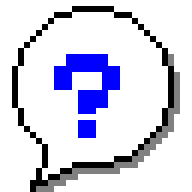
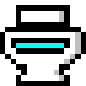
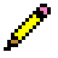
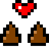
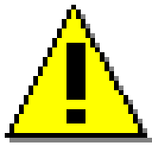
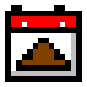
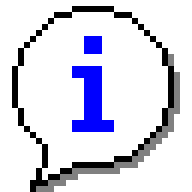
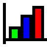

Support
Help Topics for Track My Poops
Stuck, found a bug or have an idea? Email me and I'll get back to you. If something's broken, tell me your phone model, your iOS or Android version and what you tapped.
Email supportOr write to trackmypoops@gmail.com.
- How do I log a poop?
- I logged the wrong time or made a mistake
- How do I share a GIF?
- Where's my Poop Report?
- How do Poop Pals work?
- Poop Pals rules, reporting and blocking
- How do I leave Poop Pals?
- How do I turn off the farts?
- My reminders aren't showing up
- Can people see my reminders?
- Where is my poop log stored?
- I'm getting a new phone
- How do I delete my data?
- Why are there ads?
- I bought Flush Away the Ads. Where did it go?
- How do I change ad tracking?
- What do the kinds and the stink score mean?
- Is this medical advice?

How do I log a poop?Tap Track a Poop, then pick a color, a kind and a size, and rate the stink (or skip it). Add a note if anything was weird (corn counts). Tap Log This Poop, and when it lands in the toilet, hit FLUSH.

I logged the wrong time or made a mistakeLogging one from earlier? On the last step, use the "when did it happen?" setting before you save. Logged one by mistake? Go to Edit > Undo Last Poop to remove the most recent one, or open Today's Poops and delete any entry. The arrows there take you back to earlier days.
How do I share a GIF?
After you flush, tap Share GIF. You can also share any poop from its card in Today's Poops. The GIF is made on your phone, then your share menu opens. On iPhone, saving it to your photos asks permission to add photos first.
Where's my Poop Report?
A new one is ready every Sunday at 6:00 PM, and Poop Wrapped (your year in poops) drops on December 1. Open either one anytime from the Reminders screen, under Recaps, where you can also turn off the notices. Each card has a share button.

How do Poop Pals work?- Tap Poop Pals on the home screen, pick a name and tap Agree and Join. No email, no password.
- Tap Invite a Pal to send a friend a one-time code. They tap Enter a Code and type it in. Codes work once and run out after 7 days.
- You pick what pals see: the time, color, kind and size, the stink score, and your notes (off unless you turn it on). They always see that you went, since counts and streaks need it.
- Changed your mind about someone? Remove them from your pal list. They can't see anything from you anymore, and they can't add you back unless you send them a new code.
- Alerts for when a pal flushes or reacts can be turned off on the Pals screen.

Poop Pals rules, reporting and blockingPoop Pals is for laughing about poop with people you know. Joining means you agree to keep it that way:
- No hate, slurs, threats or harassment.
- No sexual stuff.
- Don't share anything about someone else without their OK.
Names with slurs or sexual words get turned away, and the same words get starred out of shared notes. If a pal crosses the line anyway, tap Report next to their name on the Pals screen, or under a note they shared. You can block them at the same time, which removes them right away. I read every report within 24 hours, and anyone breaking the rules loses their Poop Pals account. You can also email trackmypoops@gmail.com.
How do I leave Poop Pals?
On the Pals screen, tap Leave Poop Pals. That deletes your Poop Pals account and everything you shared: your pals, your shared poops and your reactions. Your log on your phone stays. Deleted the app without leaving first? Email me your Poop Pals name and a pal's name and I'll delete it.
How do I turn off the farts?
Tap Reminders on the home screen, then look under Sounds. Uncheck the fart box to keep just the plop and flush, or turn off all sounds. Heads up: on iPhone, the sounds play even when the silent switch is on. On Android, they follow your media volume.
My reminders aren't showing up
- Make sure Remind me to track my poops is checked on the Reminders screen, with at least one time turned on.
- Make sure notifications are allowed: on iPhone in Settings > Notifications > Track My Poops, on Android in Settings > Apps > Track My Poops > Notifications.
- Already logged one today? By default the rest of that day's reminders are skipped. Uncheck Stop reminding me once I've logged a poop that day if you want them anyway.
- A Focus mode like Do Not Disturb or Sleep can hold them back.
- Tap Send a test reminder to check that everything works.
Can people see my reminders?
They show up like any other notification, so the text can appear on your lock screen. To hide it on iPhone, go to Settings > Notifications > Track My Poops > Show Previews and pick When Unlocked or Never. On Android, look for the lock screen setting under Settings > Notifications (the name varies by phone).
Where is my poop log stored?
On your phone. There's no account, so nothing syncs between devices. If you join Poop Pals, a copy of the last 120 days goes to the Poop Pals database, trimmed to what you chose to share, so your pals can see it. The details are in the privacy policy.

I'm getting a new phone- Your log is part of your phone's regular backup, so setting up the new phone from a backup of the old one brings it along (iCloud or a computer on iPhone, your Google backup on Android).
- For your own records, tap Export under Your Data on the Reminders screen to save a spreadsheet file (CSV) of every poop.
- The Poop Pals account lives on the old phone, so on the new one, join again and re-add your pals. Leave Poop Pals on the old phone first to delete the old account.
- Bought Flush Away the Ads? Tap Restore Purchase on the new phone.
How do I delete my data?
On the Reminders screen, go to Your Data > Delete all. It asks twice, because there's no undo. To delete what you shared with pals, leave Poop Pals. Deleting the app removes everything it saved on your phone.
Why are there ads?
They keep the app free. There's a banner on some screens (never while you're logging or flushing), and sometimes a full-screen ad after a flush: never on your first one, at most every other flush, and no more than once every 10 minutes. Ads never see your poop log. Rather not see them at all? Buy Flush Away the Ads once, on the Reminders screen under Ads, and they're gone for good.
I bought Flush Away the Ads. Where did it go?
On a new phone or after reinstalling, tap Restore Purchase on the Reminders screen under Ads. Use the same Apple ID or Google account you bought it with. Still seeing ads? Email me.

How do I change ad tracking?On iPhone, go to Settings > Privacy & Security > Tracking. On Android, reset or delete your advertising ID in Settings > Privacy > Ads (on some phones, Settings > Google > Ads). If you're somewhere that requires ad consent (like the EU or the UK), you'll also find Ad privacy choices under Ads on the app's Reminders screen.

What do the kinds and the stink score mean?The kinds are the Bristol Stool Scale, a 7-type chart doctors use, with friendlier names: Pebbles, Lumpy Log, Cracked Log, Smooth Snake, Soft Blobs, Mushy and Liquid. Types 3 and 4 (Cracked Log and Smooth Snake) are the goal, which is what your "ideal poop" percentage counts. Types 1 and 2 mean you're backed up, and 6 and 7 mean things are moving a bit fast.
The stink score goes from 1 (fresh as a daisy) to 10 (biohazard). It's optional, but science thanks you.
Is this medical advice?
No. Track My Poops is for fun and general awareness. Black, red or pale poop more than once, or pain that won't quit? Talk to a doctor.